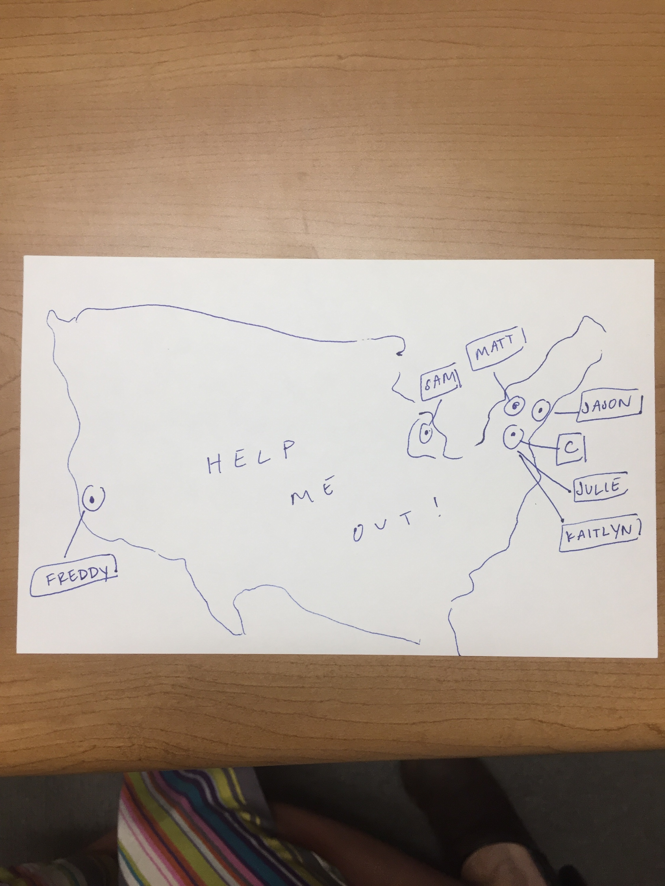
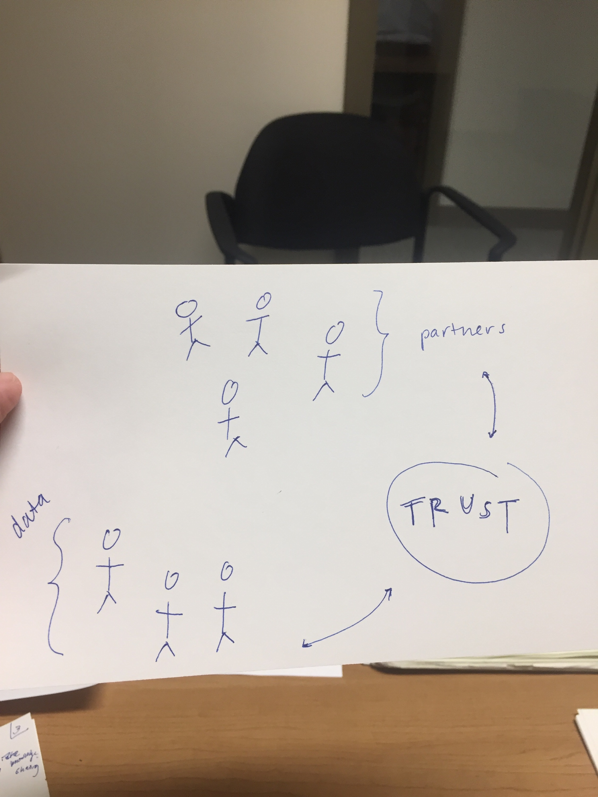
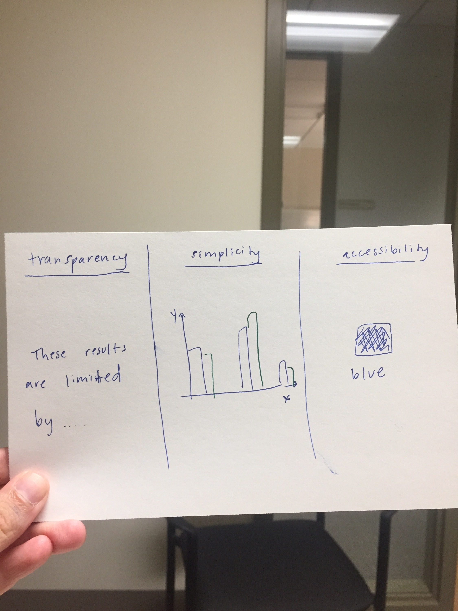

<!doctype html>
<html>
<meta property="og:url"                content="https://hjohns12.github.io/good-dss/slides.html" />
<meta property="og:type"               content="article" />
<meta property="og:title"              content="Hope for Data" />
<meta property="og:description"        content="This talk is about learning to partner, use tools, and present results in the hopes of doing o-k data science." />
<meta property="og:image"              content="https://i.ytimg.com/vi/2lNCj1_zZTk/maxresdefault.jpg" />

 <head>
	 <meta charset="utf-8">
	 <meta name="viewport" content="width=device-width, initial-scale=1.0, maximum-scale=1.0, user-scalable=no">

	 <title>hope4dat</title>

	 <link rel="stylesheet" href="css/reveal.css">
	 <link rel="stylesheet" href="css/theme/tchoi8.css">

	 <!-- Theme used for syntax highlighting of code -->
	 <link rel="stylesheet" href="lib/css/zenburn.css">

	 <!-- Printing and PDF exports -->
	 <script>
		 var link = document.createElement( 'link' );
		 link.rel = 'stylesheet';
		 link.type = 'text/css';
		 link.href = window.location.search.match( /print-pdf/gi ) ? 'css/print/pdf.css' : 'css/print/paper.css';
		 document.getElementsByTagName( 'head' )[0].appendChild( link );
	 </script>
 </head>
 <body>
<div class="reveal">
 <div class="slides">

<section data-markdown>
			 <script type="text/template">

<!-- .slide: style="text-align: left;"> -->

## Hope 4 Data

<br>
Friendly Tech Space
<br>
August 2, 2018
<br>
Hope Johnson
<br>
<a href="http://twitter.com/@hopecaneel">@hopecaneel</a>


 </script>
</section>

<section data-markdown>
<script type="text/template">
<!-- .slide: style="text-align: left;"> -->

## A little about me....

### <li class="fragment" data-fragment-index="0">  Somebody told me to become a biostatistician </li>
### <li class="fragment" data-fragment-index="1">  I moved to the Twin Cities for college </li>
###  <li class="fragment" data-fragment-index="2">  Now I am here!  </li>

 </script>
</section>


<section data-markdown>
<script type="text/template">
<!-- .slide: style="text-align: left;"> -->

## Accountable Policing
### <li class="fragment" data-fragment-index="0">  People complain about the police --> </li>
### <li class="fragment" data-fragment-index="0">  Their complaints **sometimes** become official data </li>
###  <li class="fragment" data-fragment-index="1">  These data live in PDFs </li>
###  <li class="fragment" data-fragment-index="2">  My work so far: cleaning, viz, lil regressions </li>
###  <li class="fragment" data-fragment-index="3">  Much learning! </li>


</script>
</section>


<section data-markdown>
<script type="text/template">


## Part 1. Partnerships
 </script>
</section>


<section data-markdown data-transition="fade">
<script type="text/template">


 </script>
</section>

<section data-markdown data-transition="fade">
<script type="text/template">


 </script>
</section>

<section data-markdown>
<script type="text/template">
<!-- .slide: style="text-align: left;"> -->

# Part 2. Tools
 </script>
</section>

<section data-markdown>
<script type="text/template">
<!-- .slide: style="text-align: left;"> -->

## Why open source?

### <li class="fragment" data-fragment-index="0">  Why it is important to share code of GitHub?
</li>
### <li class="fragment" data-fragment-index="1">Time is sometimes very important </li>


 </script>
</section>


<section data-markdown data-transition="fade">
 <script type="text/template">

<!-- .slide: style="text-align: left;"> -->

## 3. Presentation

### <li class="fragment" data-fragment-index="0">  Magical realism in the realms of AI, ML, Big Data </li>
### <li class="fragment" data-fragment-index="1">  Fancy ≠ good </li>

</script>
</section>

<section data-markdown data-transition="fade">
<script type="text/template">



 </script>
</section>


<section data-markdown data-transition="fade">
<script type="text/template">
<!-- .slide: style="text-align: left;"> -->

## Next steps

Accountable Policing Project is moving to Los Angeles!

#### For full access to my work, check out the <a href="https://github.com/hjohns12/NYPD-disciplinary-proceedings">project repo </a>


Want to help?

#### Come talk, or email me at <a href="mailto:hopecaneel@gmail.com" target="_blank">hopecaneel at gmail dot com</a>.

</script>
</section>


<section data-markdown>
 <script type="text/template">
 <!-- .slide: style="text-align: left;"> -->

## Thanks!

</script>
</section>

<section data-markdown>
 <script type="text/template">
 <!-- .slide: style="text-align: left;"> -->

 </script>
</section>

				 </div>
	 </div>

	 <script src="lib/js/head.min.js"></script>
	 <script src="js/reveal.js"></script>

	 <script>
		 // More info https://github.com/hakimel/reveal.js#configuration
		 Reveal.initialize({
			 history: true,

			 // More info https://github.com/hakimel/reveal.js#dependencies
			 dependencies: [
				 { src: 'plugin/markdown/marked.js' },
				 { src: 'plugin/markdown/markdown.js' },
				 { src: 'plugin/notes/notes.js', async: true },
				 { src: 'plugin/highlight/highlight.js', async: true, callback: function() { hljs.initHighlightingOnLoad(); } }
			 ]
		 });
	 </script>
 </body>
</html>
